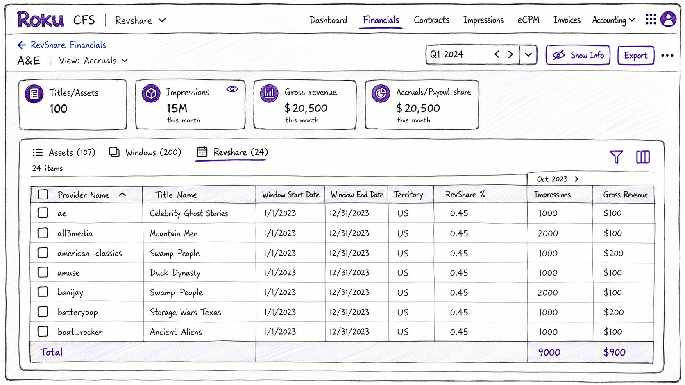
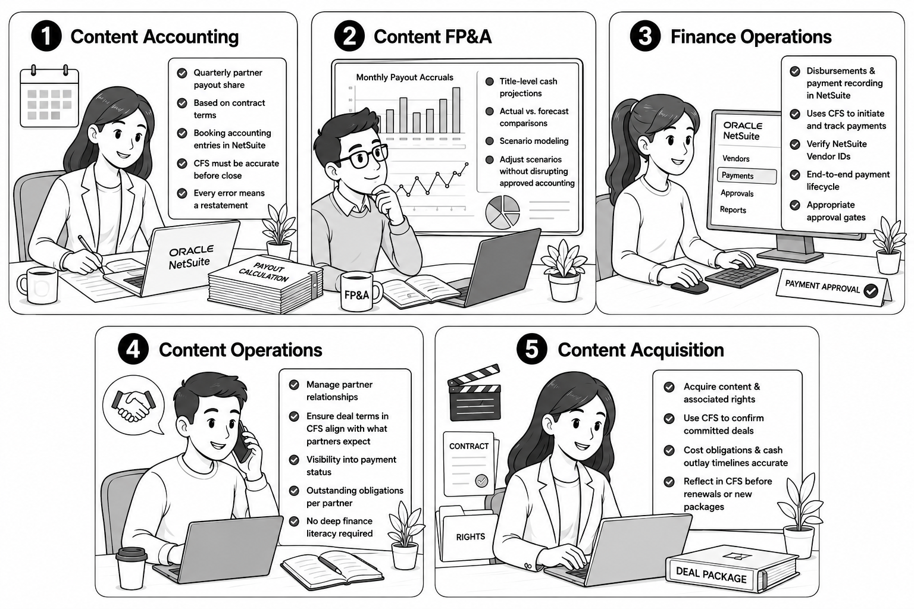
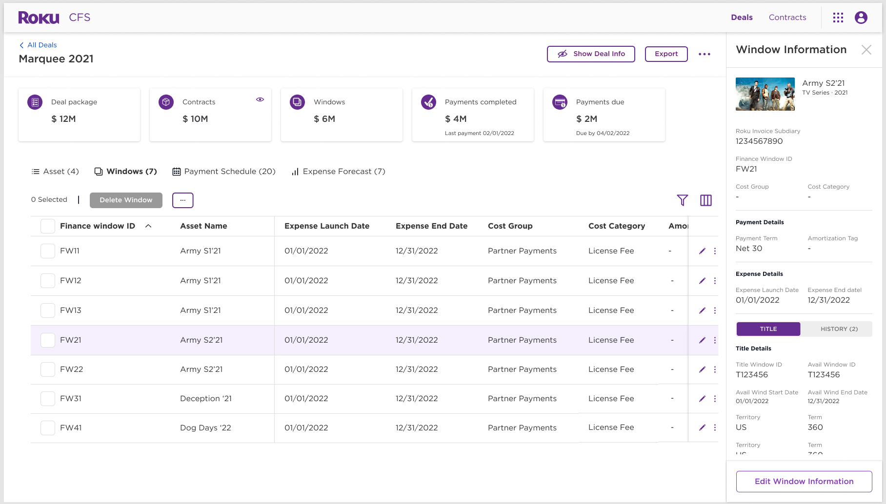
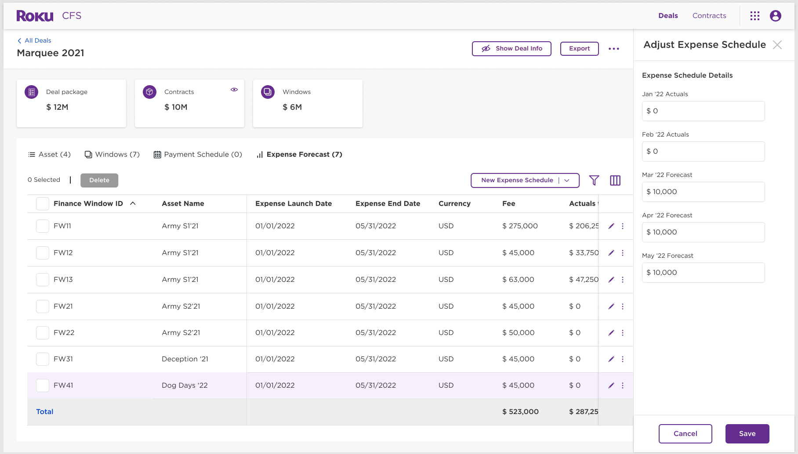
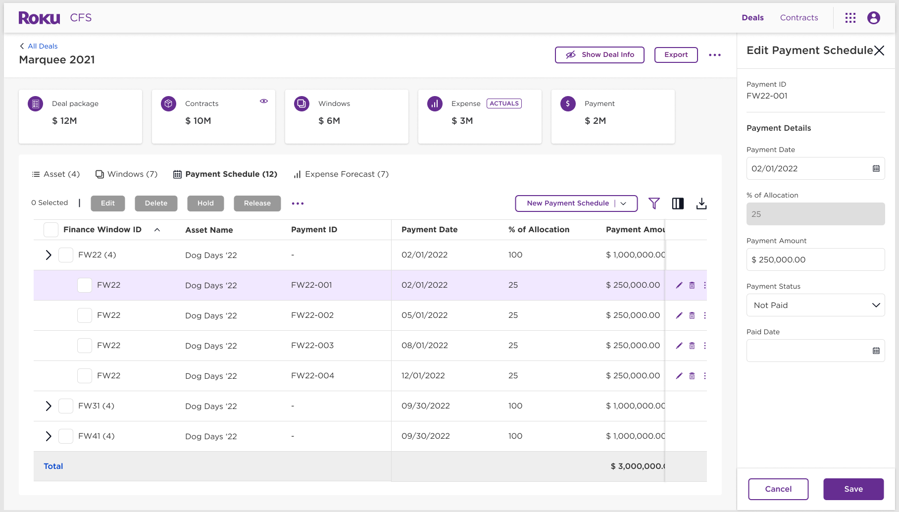
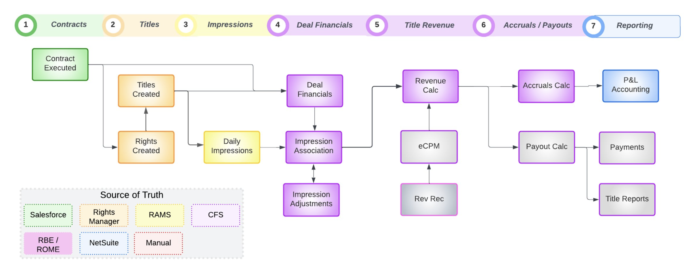
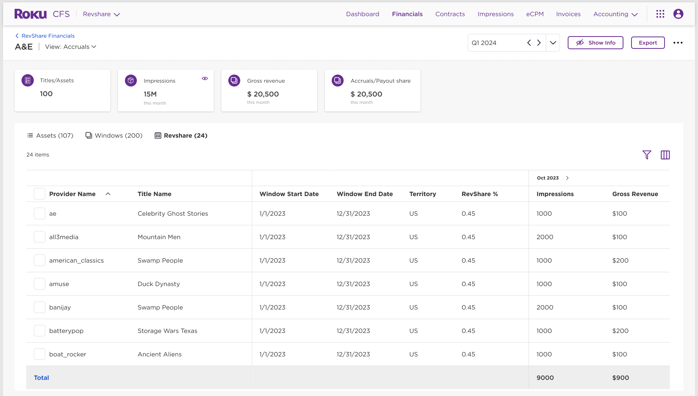

Building Roku's single source of truth for content spend — from scattered Excel trackers to an end-to-end platform automating deal financials, expense projections, payouts, and accounting.

The Roku Channel (TRC) saw explosive content growth driven by acquisitions of Quibi and THOR, along with a rapidly expanding licensed content catalog. But the financial operations supporting this growth hadn't scaled. Finance teams were managing hundreds of content deals using a fragmented patchwork of Excel trackers, email threads, and manual NetSuite entries.
The consequences compounded quarterly: over/under payments to content partners, reconciliation marathons at close, and no reliable view of what Roku had spent or owed across thousands of content windows.
CFS serves five distinct user groups with different mental models of content finance. Accounting thinks in journals and periods. FP&A thinks in projections and scenarios. Content Acquisition thinks in deals and titles. Each group needed the system to speak their language — even though they were all looking at the same underlying data.

"Establish a single source of truth for all spend related to licensed and owned content — and enable workflows that allow tracking, initiating payments, and booking accounting entries accurately and timely."
CFS was conceived as Roku's finance backbone for The Roku Channel content spend. Rather than building a reporting dashboard, the vision was to build an operational system of record — one that every downstream finance action would flow through, from the moment a deal was signed through the final accounting journal entry years later.
CFS grew from a focused MVP for Direct License workflows into an enterprise finance platform supporting Direct License, Roku Originals, and RevShare across hundreds of content partners. Each phase expanded both the workflow coverage and the data quality of Roku's content finance operations.
The master brief defined CFS as a new platform to eliminate silos and repetitive data entry. Phase 1 focused entirely on the foundational financial entity: giving accounting teams a governed place to define content assets from their deal contracts.


With the asset foundation in place, attention shifted to automating the most time-consuming manual work: monthly expense forecasts. The DLW Excel tracker — used by accounting to project content costs — was deprecated in favor of a rules-based engine inside CFS.
FY23 completed the DL finance loop. Payment automation gained NetSuite integration so approved schedules flowed directly into vendor disbursements. Accounting Entries Automation eliminated the last manual step — journal creation — replacing it with a governed subledger engine.



Having proven the DL workflow, CFS expanded into RevShare — Roku's most complex payout model, where partner payments depend on monthly ad revenue, eCPM rates, and distribution model configurations across hundreds of partners. This phase required deep integration with the Ads / RAMS data pipeline.
Designing CFS meant navigating both the complexity of financial domain logic and the operational reality that errors here affect multi-million dollar payments. These were the defining design problems across the four-year build.
Open to senior UX roles, contract projects, and complex enterprise product challenges.